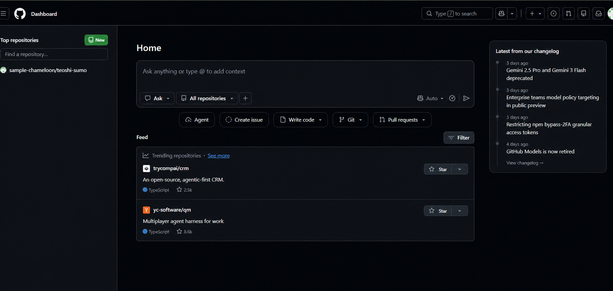
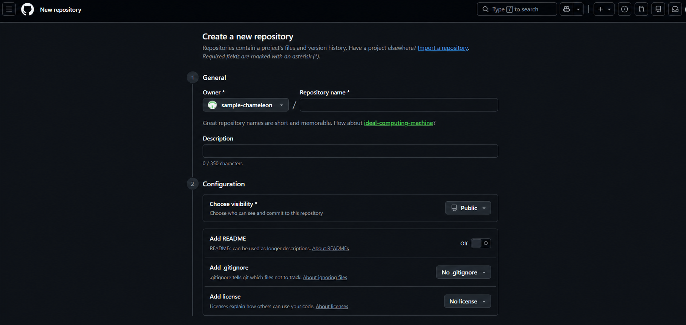
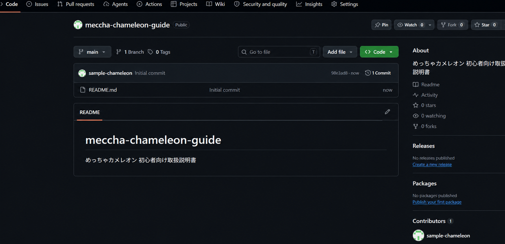
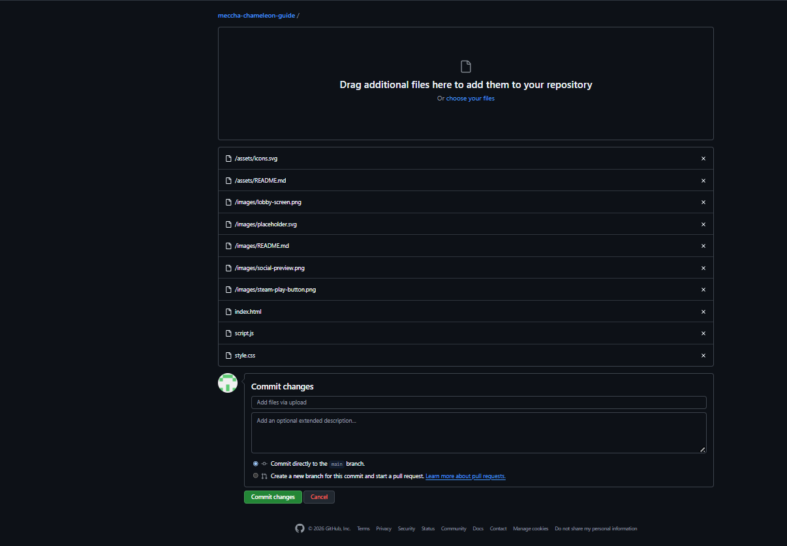
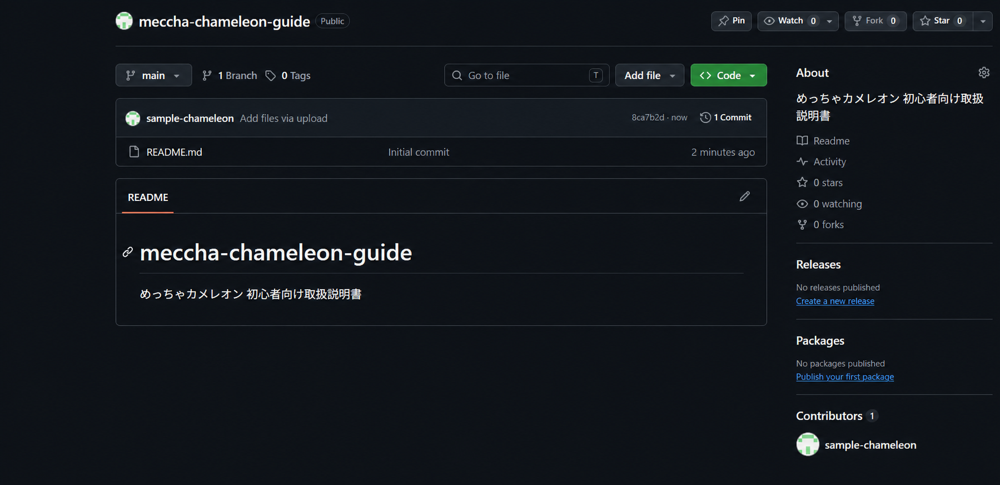
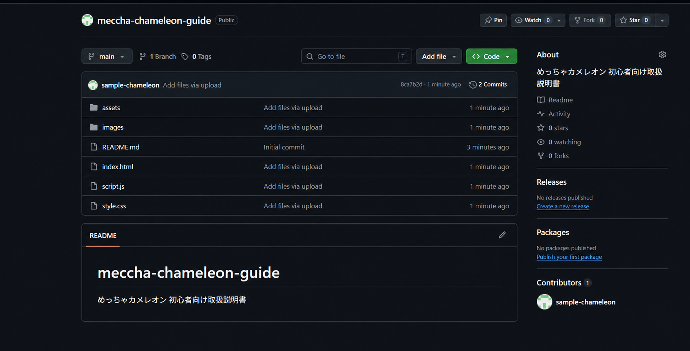
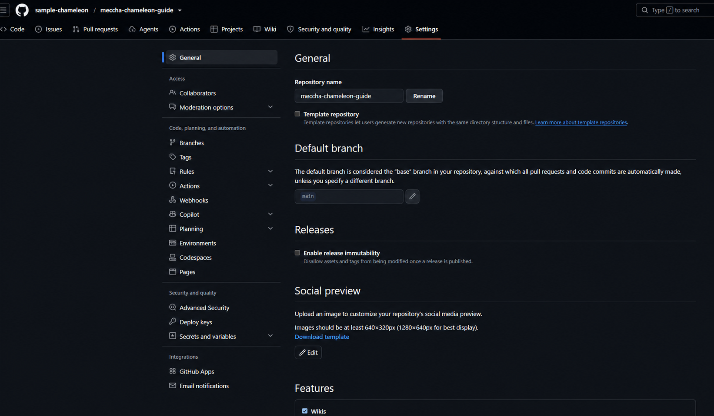
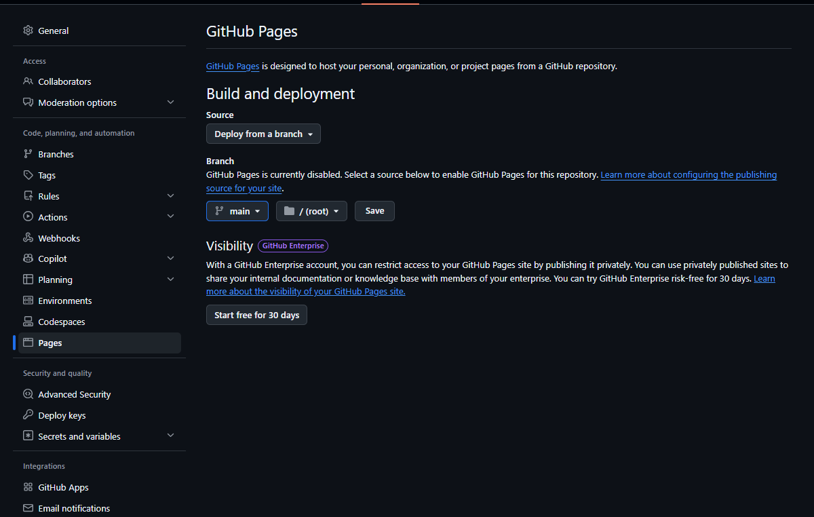
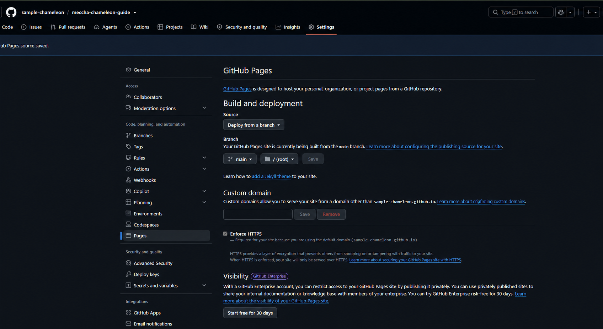
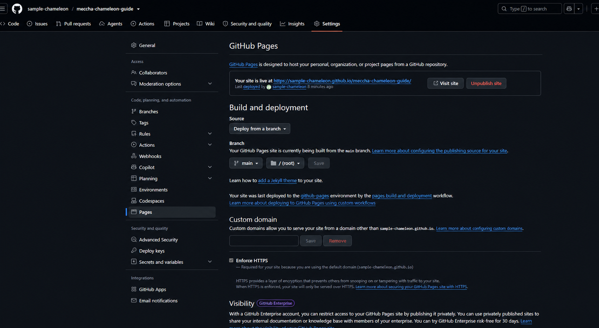

STEP 1
GitHubへログインする
ダッシュボード左側にある緑色のNewを押します。

はじめてでも大丈夫
実際のスクリーンショット10枚で、最初から公開完了まで説明します。
実際の操作画面を使用しています。ユーザー名は、説明用の架空名「sample-chameleon」に置き換えています。別の人が使う場合は、自分の名前に読み替えてください。
STEP 1
ダッシュボード左側にある緑色のNewを押します。

STEP 2
| 項目 | 設定例 |
|---|---|
| Repository name | meccha-chameleon-guide |
| Description | 公開するページの説明 |
| Visibility | Public |
| Add README | On |
| .gitignore / License | 追加しない |
設定後、画面下のCreate repositoryを押します。

Publicの注意：登録したファイルは誰でも見られます。秘密情報を入れないでください。
STEP 3

STEP 4
公開専用フォルダーの中身をアップロード枠へドラッグします。
Commit directly to the main branchを選び、Commit changesを押します。

重要：publicフォルダー自体ではなく、中身を入れます。index.htmlが一番上に見える状態が正解です。
STEP 5
登録直後にREADMEしか見えない場合は、30秒ほど待ってF5を押します。

STEP 6
assets、images、index.html、script.js、style.cssが表示されたら成功です。

STEP 7

STEP 8
| 項目 | 選ぶ内容 |
|---|---|
| Source | Deploy from a branch |
| Branch | main |
| Folder | /(root) |
設定後、Saveを押します。

Start free for 30 daysやCustom domainは、通常の無料公開では不要です。
STEP 9
保存後、GitHubがページを作ります。数分から10分ほど待ち、F5で更新します。画面を開いたままにする必要はありません。

STEP 10
Your site is live at ...と表示されたら成功です。Visit siteで公開ページを開きます。

https://GitHubユーザー名.github.io/リポジトリ名/
Unpublish siteは公開を止めるボタンです。公開を続ける場合は押しません。
公開URLは基本的に変わりません。
10分待ってF5を押します。index.htmlの位置と、Pagesのmain・/(root)設定を確認します。
imagesフォルダー、HTMLの画像名、大文字と小文字を確認します。
Settings → Pages → Unpublish siteを使います。
$publish-static-html-github-pagesを使って、このHTMLをGitHub Pagesで公開してください。